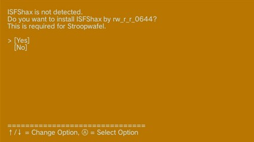
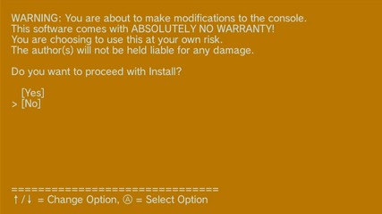

Instalar ISFShax
Condición: Se muestra cuando ISFShax no está instalado en el sistema (verifica una ubicación de memoria, por lo que también lo detecta en fallback mode).
Pantalla:

ISFShax is not detected. Do you want to install ISFShax by rw_r_r_0644? This is required for Stroopwafel. [Yes] [No]
ISFShax es un exploit de arranque en frío (coldboot) real, dirigido al cargador de arranque (boot1) de la Wii U, por lo que se ejecuta incluso antes de que se cargue el sistema operativo de usuario (CafeOS). Esto proporciona una protección muy sólida contra *bricks* (bloqueos "irreparables" de la consola), siempre que se la ranura para tarjetas SD de la consola funcione. En este caso, se utiliza para cargar Stroopwafel (*minute* e *IOS plugins*), el cual finalmente carga Aroma.
Durante la instalación, se descarga temporalmente el instalador de ISFShax y la imagen del superbloque en la memoria SLC de la Wii U (/storage_slc/hax/installer). ISFShax en sí mismo se instala en 4 de los superbloques de la memoria SLC, no aparece visible en el sistema de archivos de la consola.

WARNING: You are about to make modifications to the console. This software comes with ABSOLUTELY NO WARRANTY! You are choosing to use this at your own risk. The author(s) will not be held liable for any damage. Do you want to proceed with Install? [Yes] [No]
Confirma la instalación seleccionando [Yes]. La consola se reiniciará en el instalador de ISFShax, instalará automáticamente ISFShax y se reiniciará de nuevo. Sé paciente.